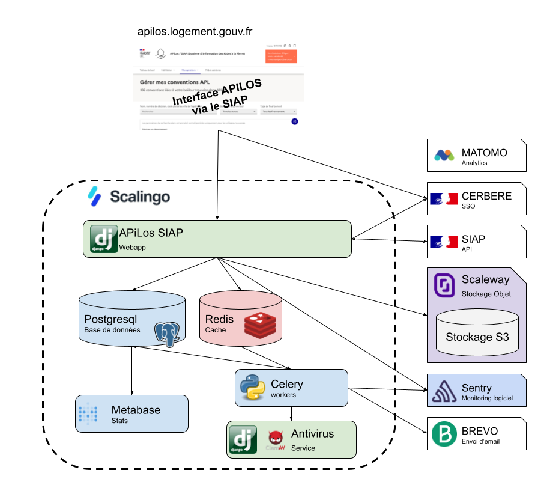

APiLos - documentation technique¶
- DEVELOPPEMENT
- DEPLOIEMENT DE LA PLATEFORME APILOS
- Solution d’hébergement
- CI/CD et branch git
- Déploiement
- Déployer un nouvel environnement
- Executer une commande python sur un Scalingo
- Modification de l’appartenance d’un programme à un bailleur ou une administration
- Remise à zéro des éléments métiers de la base de données d’un environnement
- Rechargement des fixtures de tests en staging
- Chargement d’un jeu de test
- Déploiement de Metabase
- Deploiement de la documentation technique
- Migration des données depuis Ecoloweb
- Recherche de conventions
- Module commentaires
- Alertes SIAP
- Plan de continuité d’activité / Plan de reprise d’activité
- Backup des buckets S3
- Documentation des interactions SIAP APiLos
- Administration et back office
Solution technique¶
La plateforme est développé avec le framework Django et son moteur de template par défaut.
Les librairies Javascript nécessaires à l’application sont compilés par l’aplication Parcel.js
Le design de l’interface suit le Système de design de l’état
APiLos utilise le SSO CERBERE du Minitère de la transition écologique pour authentifier ses utilisateurs. Les habilitations (gestion des droits et périmètres) sont fournies par le SIAP.

Les solutions tierces utilisées par APiLos:
SIAP : Système d’Information des Aides à la Pierre - Habilitations des utilisateurs
CERBERE : SSO - Authentification des utilisateurs
Scalingo : hébergement de la solution (cloud souverain)
Scaleway : stockage de fichiers compatible avec le protocole S3
Brevo : envoi de courriels transactionnels (En cours de dépréciation)
Sentry : monitoring logiciel
Github : gestion des versions du code source d’ APiLos et chaîne de tests et de mise en production (CI/CD)
Qualité de code¶
Plusieurs outils et processus sont utilisés pour gérer la qualité de code.
Via git¶
Lors de chaque commit, un controle de qualité est exécuté sur tous les fichiers édités via les hook git.
git pre-commit avec les hooks de bases : trailing-whitespace, check-yaml, check-added-large-files
ruff comme linter intégré au pre-commit pour les fichiers python
djabe comme prettier des fichiers html
black comme prettier des fichiers python
Pull Request et processus de revue de code¶
La branche main est protégée : il n’est pas possible de la modifier autre que par une Pull Request.
Pour chaque fonctionnalité, le développeur fait une Pull Request sur github de sa branche de développement vers la branche main. Grâce à la fonctionnalité CODEOWNERS de github, la revue de la PR est assignée à 2 membres de l’équipe de développeur d’APiLos.
Une Pull Request ne peut pas être « mergée » tant qu’elle n’a pas au moins une approbation d’un membre de l’équipe. Pour une Pull Request qui modifie l’architecture de l’application, qui modifie de manière importante le comportement de l’application ou qui met à jour une version majeur d’une dépendance, on préfèrera avoir 2 approbations.
A chaque Pull Request, un certain nombre de controles sont exécutés.
Les controles par des systèmes tiers:
Snik : Recherche les vulnérabilités de l’application
SonarCloud : Vérifie la qualité de code
CodeQL : Recherche les vulnérabilités de l’application
GitGuardian Security Checks : Vérifie qu’aucun secret n’est partagé dans le code source
Les controles implémentés par l’équipe :
Tests unitaires et test d’intégration : exécuté avec pytest
Coverage : test la couverture du code par les tests
Ces mêmes controles sont exécutés à chaque modification de la branche main (lors du « merge » de la Pull Request)
En plus des controles de qualité éxécuté sur les Pull Request et la branche main, les dépendances Python, Javascript et Github sont inspectées et les mise à jour sont proposées via Pull Request par l’application dependabot
Déploiement (Staging et Production)¶
Le déploiement de la plateforme APiLos est exécuté via la CI/CD github action
L’application est déployée sur les environnements d’intégration, recette et école quand la branche main est mise à jour (à chaque merge de Pull Request) : github action
L’application est déployée sur l’environnement de production quand un tag de la forme v*.. est poussé sur Git : github action
Pour en plus de détails, merci de se référer à la documentation sur DEPLOIEMENT.md
Installation de la plateforme en local (Developpeurs)¶
Trouver les détails d’installation de l’application en local pour le développement et les détails techniques sur la documentation dédiée : DEVELOPPEUR.md
Envoi de mails¶
Nous utilisons Brevo (anciennement sendinblue). Si la variable d’environnement SENDINBLUE_API_KEY est configurée, le backend email SendInBlue est utilisé. Sinon, le backend email console est utilisé et les emails sont imprimés dans a console (dans les logs)
DNS (uniquement pour la gestion des emails et emailists)¶
Les DNS sont configurés dans Alwaysdata les emails et mailing list sous le domaine apilos.beta.gouv.fr sont aussi géré avec Alwaysdata : contact@apilos.beta.gouv.fr, recrutement@apilos.beta.gouv.fr, equipe@apilos.beta.gouv.fr…
Bases de données¶
---
title: Schéma simplifié tables de l'application APiLos
---
erDiagram
Bailleur ||--|{ Operation : un-plusieurs
Administration ||--|{ Operation : un-plusieurs
Operation ||--|{ Lot : un-plusieurs
Operation ||--|{ Convention : un-plusieurs
Convention ||--|| Lot : un-un
Lot ||--|{ Logement : un-plusieurs
Logement ||--|{ Annexe : un-plusieurs
Lot ||--|{ TypeStationnement : un-plusieurs
Convention ||--|{ Pret : un-plusieurs
Notes :
Une Opération sur le SIAP peut-être appelé un Programme sur APiLos, Dans la mesure du possible, nous utiliserons
Opérationdans la documentation.Une Opération contient un lot par type de financement
Diagramme des statuts d’une convention¶
Représente la vie d’une convention
---
title: Diagramme des statuts d'une convention
---
flowchart LR
Projet[En projet] --> Instruction[À instruire] --> ASigner[À signer] --> Valide --> Résiliation
Instruction --> Correction[Corrections requises]
Correction --> Instruction
Projet --> Annule[Annulation]
Instruction --> Annule
Correction --> Annule
Valide --> Dénonciation
Gestion des avenants¶
Lors de la création d’avenant, l’ensemble des objets : Opération, Convention, Lot, Logement, Annexe, Type de stationnement, Prêt liées à la convention sont dupliquées et les champs parent_id des objets Opérations, Lot et Convention se réfèrent aux objets de la convention principale. L’ordre des avenants est déterminé par leur date de création. il ne peux y avoir qu’un seul avenant en cours d’instruction par convention.
---
title: Schéma de l'application des corrections des acteurs
---
flowchart RL
subgraph Avenant3
direction LR
Opération3 --> Convention3 --> Lot3 --> Logement3 --> Annexe3
Lot3 --> TypeStationnement3
Convention3 --> Prêt3
end
subgraph Avenant2
direction LR
Opération2 --> Convention2 --> Lot2 --> Logement2 --> Annexe2
Lot2 --> TypeStationnement2
Convention2 --> Prêt2
end
subgraph Avenant1
direction LR
Opération1 --> Convention1 --> Lot1 --> Logement1 --> Annexe1
Lot1 --> TypeStationnement1
Convention1 --> Prêt1
end
subgraph ConventionPrincipale
direction LR
Opération --> Convention --> Lot --> Logement --> Annexe
Lot --> TypeStationnement
Convention --> Prêt
end
Avenant1 --> ConventionPrincipale
Avenant2 --> ConventionPrincipale
Avenant3 --> ConventionPrincipale
Stockage de fichiers¶
Les documents sont stockés sur un répertoire distant et souverain compatible avec le protocole S3 sur Scaleway ce processus est géré via la librairie python boto en combinaison avec le package default_storage de Django
Ce stockage est activé lorsque les variables d’environnement AWS… sont définits.
Ce stockage s3 est sauvegardé toutes les semaine via une action github action
Monitoring et alerting de l’application APiLos¶
Monitoring logiciel¶
Le monitoring logiciel est assuré via Sentry mis à disposition par beta.gouv.fr
Monitoring système¶
APiLos est monitoré par l’outil Dashlord de la fabrique du numérique du Ministère de la Transition écologique et de la Cohésion des territoires. Dashlord inclut un monitoring via updown.io qui ping l’application toutes les 5 minutes.
SIAP¶
Tous les détails concernant les interactions entre APiLos et la platefome SIAP sont décrites dans la documentation SIAP-APiLos.md
Protection des données¶
Les CGU sont publiés sur le site APiLos et inclus les obligations relatives au RGPD Le rapport d’accessibilité est publié sur le site APiLos
Statistique de la plateforme¶
Les statistiques d’usage et le suivi des KPIs de la start up d’état sont disponibles sur la page de statistique
Administration métier¶
Il est possible d’accéder à l’administration fournie par le framework Django si votre utilisateur est enregistré comme faisant parti du staff ou est super administrateur.
Il faut d’abord être authentifié par CERBERE puis accéder à l”administration
Edition des indices de loyer pour la calculette des loyers (reprise d’Ecoloweb)¶
Pour éditer les indices de loyer par année, il faut et suffit de se connecter à l’administration Django et accéder à l”administration des indices de loyer